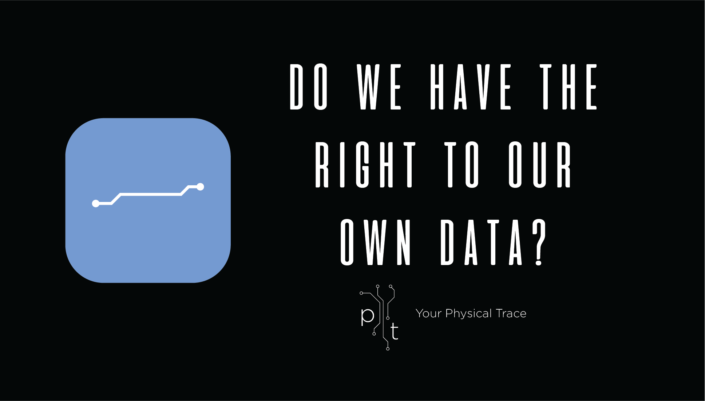

My project is based around data traces we leave online and visualising this through augmented reality. The
aim of my project is to help everyday people understand that data is tracked every time you visit a website
or an application, and to be mindful of the information they share on the internet and how this affects their
privacy online.
I am going to present these data traces through a physical trail that is seen through the eyes of the user. It will be displayed through an augmented reality implant that users can buy.
The interface of the AR design will be futuristic and clean. There will be channels branching off user’s devices that connect to the internet, showing data they have input into various sites that is being unknowingly tracked. It will be similar to a map, where each piece of data that appears branches off into more pieces of information, detailing where that data goes and what it is used for.
Users are also able to see other people’s physical traces as they pass by them, alluding to the fact that your data is almost made public, and can be seen by multiple different companies.
Many people don’t realise that almost everything they do on the internet is observed and recorded, and the implications this has for them. Companies use various methods to collect your data such as multiple types of HTTP cookies, web beacons, voice and audio recording, GPS location tracking, facial recognition as well as many others within their applications or sites.
This data is sold or given to companies, governments or advertisers who utilise it in a number of ways. Free to use websites and applications make their money by collecting and selling your data. Companies who obtain your data use it for manipulative and targeted advertising, but it has also been used to sway elections and political campaigns, exposed through the Cambridge Analytica files and Edward Snowden’s revelations.
Social media plays one of the largest roles in this. It is used by nearly everyone with an internet connection and serves as a platform for us to share information, whether it be personal, private or public. Google and Facebook are huge players into this and it is astonishing just how much these companies own. For example, Google can track your data through the web browser Chrome, Gmail, YouTube, Android OS, Google Drive and Docs, Google Maps, Google Images, Google Home and the list goes on. Considering just how much this company owns it is almost impossible to avoid them online. People need to consider what they are sharing online, and how and what this data is used for. My project aims to clarify and educate people on this issue of data and internet privacy, and how it affects everyone.
My Shadow details how you can better protect your privacy online and gives greater detail to what I have discussed above.
Data Collection and Manipulation
Data Collection
There are countless ways that companies can track your data. Companies commonly use methods such HTTP cookies and web beacons, but also utilise voice recording, GPS location tracking, facial recognition as well as many others within their applications or sites.
Companies such as Google, Facebook and Apple own a large number of applications and sites, allowing them to build up a more extensive digital profile of your information, also known as a Browser Fingerprint.
One of the more concerning data collection software is called Alphonso. Alphonso is software that mobile app developers can integrate into their apps. It uses ‘Automated Content Recognition’ to record short audio samples from your device which are then compared to commercial content that is playing on your television. Alphonso then uses this information to deliver more relevant ads to the user’s mobile device.
They claim that the software doesn’t understand human conversations but this doesn’t make it any less concerning. Mobile App Developers are also taking advantage of this by installing Alphonso on children’s games according to this article.
×
Cookies are a small piece of data sent from a website that is stored on a user’s computer by their web browser. They usually record info such as stateful information, user’s browsing activity and info previously entered into form fields.
They are useful for a site to record your information to personalise your experience, but can be abused by third parties, who will take this information and sell it to other companies in an effort to serve you relevant advertisements or for other purposes.
×
Web beacons are a single pixel wide transparent image invisibly embedded into web pages and email, used to check if the user has accessed or visited content.
When the page is opened, the web browser automatically downloads the image, requiring the user’s computer to send a request to the host’s server where the source image is stored. Usually utilised by third parties, this request provides identifying information about the user’s computer, allowing the host to track them.
Manipulative and Targeted Advertising
Google, Apple and Facebook each have powerful tools that enable them to easily determine and reach advertisement’s target audiences.
Google uses their search engine to track the IP addresses of computers that have visited certain websites as well as searching related kewords, and remarket ads towards them.
Facebook and other social media sites are able to track information users have given on their profiles, GPS location and viewed and liked pages to target ads towards their users.
According to this article it is estimated that location targeted advertising is worth $21 billion a year.
Data Breaches
Facebook is major contributor to data breaches and unethical privacy policies. Facebook is so popular and contains a lot of valuable information about its users that companies are eager to get their hands on.
Cambridge Analytica is a prominent example. The analytics firm harvested millions of Facebook profiles in one of the bniggest ever data breaches, and used them to build a powerful software that predicted and influenced people’s voting decisions.
Beacon, a part of Facebook’s advertising system sent data from external websites to Facebook for the purpose of targeted advertising. Beacon published its members activity on third party sites that also participated with Beacon to the user’s News Feed. This sharing happened even when users were not connected to Facebook and occurred without their knowledge.
There was a lot of controversy over the privacy of this, resulting in a class-action lawsuit ending with Facebook terminating this program.
Download Your Data
Both Google and Facebook, as well as various other companies, allow you to download the data they have stored on you.
I chose to download my Google data and it was a 15GB file, owing to the fact I use Google Docs, Drive and Photos a lot. They have details on every website I have ever visited, every query I have put into Google search, every single photo and file I have uploaded to their network but also some more concerning things such as purchase history as well as location data. They have so much information on me that it is concerning to think what would happen if this got into the wrong hands.
Used for sub headings where the title font has already been used
Body Font
Gotham Light
Used for large amounts of body text
Logo
I tried to visualise a digital representation of physical data in my logo.
The blue box portrays a digital file in which data is stored. I chose the colour blue because it is the most poular colour on the internet according to this website. It is also the colour of unvisited website links which also relates to my project’s theme.
I also used computer circuitry patterns as another depiction of the digital realm.
I created a smaller simplified logo to be used when the large logo would be unrecognisable at a smaller scale.
Colour Palette
Light Blue
RGB: 127 159 211
HEX: #7f9fd3
Light Purple
RGB: 141 130 189
HEX: #8D82BE
Dark Blue
RGB: 72 101 155
HEX: #48659b
Dark Purple
RGB: 94 84 138
HEX: #5E548A
Audience
The aim of my project is to reach as many people as possible with my message. It will be an online publication with advertisements for the implant. This allows my project to reach a wide range of people who frequently use the internet. I am aiming this project towards people who use the internet in general, but more specifically, people who regularly use social media and other web related apps which tends to be teens and young adults.
I aim to engage them with shocking information about their privacy online, where their data goes and how companies manipulate them with said information. I want to focus on how much data we unknowingly give to these companies and make people consider exactly what they post online and how much this reveals about them.
User Personas
Kelly
15
High School Student
Facebook, Instagram, Snapchat
High Risk
Kelly is unaware of data collection and her digital privacy. She frequently posts on social media and sometimes reveals personal information.
Ron
21
University Student
Reddit, Facebook, Snapchat, Pinterest
Low to Medium Risk
Ron is aware to be careful of what he posts online and that companies can track this info. He doesn’t know the full extent or invasiveness of how companies collect data.
Tracy
45
Receptionist
Facebook, Pinterest, News Websites
Medium Risk
Tracy doesn’t understand the internet that well and has no concept of data privacy or collection. She doesn’t use the internet too much and does not post much on social media, if at all.
Mike
32
IT Worker
Facebook, Reddit, Twitter
Low Risk
Mike is fully aware of data collection methods and employs procedures to protect his digital privacy. He rarely posts online and uses blockers, as well as monitoring what company’s apps he is using and how much data they collect.
Advertising
My augmented reality data visualisation is going to be sold through an implant that people can purchase. The implant itself will be small, similar to a microchip.
I want the advertising for my project to be clean and simple, with the same visual style as my logo. I will also utilise the colours from my colour palette and continue with the incorporation of circuitry.
I am taking inspiration off modern and clean advertisements by companies such as Google, Apple, Nike and Samsung. Most feature a single image of their product, accompanied by their logo and a bold phrase or slogan.
When a bypasser sees my advertisement I want them to continue to think about it and begin to question their digital privacy. I will provide shocking statistics to catch their attention and ask them thought provoking-questions such as “Do we have the right to our own data?”, “How much does Facebook know about you?” or “Does your phone record you?”.
Mockup Advertisements

References
iPhone XR Mobile Advertisement Samsung Galaxy S10 Mobile Advertisement
For my augmented reality design mockup I looked into other projects and examples of futuristic AR. I got my inspiration from the AR technology seen inside Iron Man’s suit, future AR projects as well as infographics.
It will feature a lot of clean lines and an uncluttered and coherent interface. The user will be able to look around and see channels represented with circuitry branching off user’s devices that are connected to the internet. These channels will include data that has been unknowingly tracked from their devices, displayed in multiple different graphs and graphics - taking inspiration from infographics. These channels will then connect to a wider network, visualising where their data is sold to and what it is used for.
When the user walks past other people who have devices connected to the internet they will be able to see their physical traces as well. This alludes to the fact that your data is in a network that can be accessed by multiple different companies.
Featured Information
- Pictures of related or potential ads for the user
- Platform in which the data was taken from
- List of companies data is being sold to
- Personal information
- Recent searches
- Recent social media activity
- Most visited pages
- Most liked posts
Image Reference
AR Background Image
https://thenextweb.com/syndication/2017/08/27/love-to-text-and-walk-cluelessly-prepare-topay-a-fine-for-that/
Facebook Logo
https://en.facebookbrand.com/assets/f-logo/
Reddit Logo
https://www.reddit.com/r/cutouts/comments/6q5a6l/-can_someone_give_me_a_round_cutout_of_the_reddit/
Facebook Ads
https://www.fashiongonerogue.com/jennifer-lawrence-dior-joy-fragrance/
https://www.mad-daily.com/agencies-unite-for-whittakers/
https://www.facebook.com/grabaseat/photos/a.391560277389/10157484253692390/?type=3&theater


 iPhone XR Mobile Advertisement
Samsung Galaxy S10 Mobile Advertisement
iPhone XR Mobile Advertisement
Samsung Galaxy S10 Mobile Advertisement